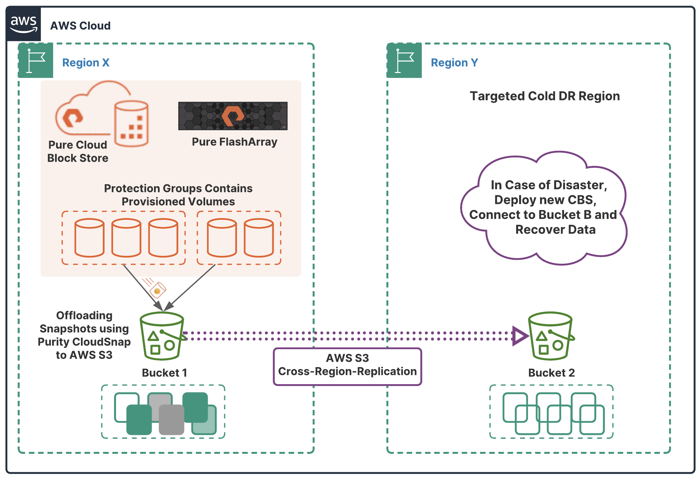

Beschreibung
Cross-Region Replication (CRR) ist eine leistungsstarke Funktion von Amazon S3, die es Benutzern ermöglicht, Objekte
automatisch von einem Bucket in einer AWS-Region in einen anderen Bucket in einer anderen AWS-Region zu replizieren.
Diese Funktion bietet zahlreiche Vorteile, darunter verbesserte Datensicherheit, erhöhte Redundanz über
geografische Standorte hinweg und die Einhaltung von Notfallwiederherstellungs- und
Compliance-Anforderungen.
Durch die Aktivierung von CRR können Benutzer sicherstellen, dass ihre Daten an mehreren geografisch entfernten
Standorten redundant gespeichert werden. Dies bietet eine zusätzliche Sicherheitsschicht, um Datenverluste aufgrund
von Katastrophen oder Ausfällen zu verhindern. Darüber hinaus unterstützt CRR die Einhaltung von
Compliance-Anforderungen, indem es sicherstellt, dass Daten gemäß den gesetzlichen Bestimmungen an mehreren
Standorten gespeichert werden.
Die Konfiguration von CRR umfasst die Definition von Replikationsregeln für bestimmte Objekte in einem Bucket.
Benutzer können festlegen, welche Objekte repliziert werden sollen und in welche Zielfelder sie repliziert werden
sollen. Diese Flexibilität ermöglicht es Benutzern, ihre Replikationsstrategie an ihre spezifischen Anforderungen
anzupassen und die Replikation nur für die erforderlichen Objekte durchzuführen.
Es ist wichtig anzumerken, dass CRR asynchron arbeitet, was bedeutet, dass die Replikation in Echtzeit oder mit
einer bestimmten Verzögerung erfolgen kann, abhängig von den Netzwerk- und Konnektivitätsbedingungen. Dies
ermöglicht eine flexible und effiziente Replikation, ohne die Leistung oder Verfügbarkeit der S3-Buckets zu
beeinträchtigen.
Ein weiterer wichtiger Aspekt von CRR ist seine Fähigkeit, die Replikation zwischen Buckets zu unterstützen, die
demselben oder unterschiedlichen AWS-Konten gehören. Dies bietet eine zusätzliche Flexibilität für Benutzer, ihre
Daten zwischen verschiedenen Konten oder Organisationseinheiten zu replizieren, um ihre Anforderungen an
Datenschutz, Compliance und Datenverfügbarkeit zu erfüllen.
Insgesamt ist Cross-Region Replication eine wichtige Funktion von Amazon S3, die es Benutzern ermöglicht, ihre Daten
sicher und redundant über verschiedene geografische Standorte hinweg zu replizieren. Durch die Bereitstellung von
verbesserten Sicherheits-, Compliance- und Notfallwiederherstellungsfunktionen trägt CRR dazu bei, die
Integrität und Verfügbarkeit von Daten in AWS S3 zu gewährleisten.
- Automatische Replikation von Objekten zwischen Buckets in verschiedenen AWS-Regionen.
- Vorteile: Verbesserte Datensicherheit, erhöhte Redundanz über geografische Standorte, Einhaltung von Notfallwiederherstellungs- und Compliance-Anforderungen.
- Sicherheit und Redundanz: Verhindert Datenverluste durch Replikation an entfernten Standorten.
- Compliance: Erfüllt gesetzliche Anforderungen durch Speicherung von Daten an mehreren Standorten.
- Konfiguration: Definition von Replikationsregeln für bestimmte Objekte, flexible Anpassung an spezifische Anforderungen.
- Asynchrone Replikation: Flexibilität bei der Replikation, abhängig von Netzwerk- und Konnektivitätsbedingungen.
- Unterstützung für verschiedene Konten: Replikation zwischen Buckets aus demselben oder unterschiedlichen AWS-Konten.
- Gesamtnutzen: Verbesserte Sicherheit, Compliance und Notfallwiederherstellungsfunktionen für AWS S3-Daten.
Schlüsselwörter
Schlüsselworte bzw. Schlagworte sollen uns dabei helfen, einen Service leichter zu erkennen, wenn es um Prüfungsfragen geht. Ließ dir die Fragen richtig durch und achte auf folgende Schlüsselworte. Sie können dir bei der Beantwortung der Fragen helfen.
- Datenreplikation
- Datensicherheit
- Redundanz
- Disaster Recovery
- Hochverfügbarkeit
- Asynchroner Datenstrom
- Standortübergreifende Datenreplikation
- Automatisierte Replikation
- Latenzoptimierung
- Compliance-Anforderungen
Grafische Erklärung
Prüfung Fragen
- Welche Voraussetzungen müssen erfüllt sein, um AWS Cross-Region Replication einzurichten?
- Welcher AWS-Service ermöglicht die Cross-Region-Replikation?
- Was passiert, wenn eine Quellressource, die für Cross-Region Replication konfiguriert ist, in einer AWS-Region gelöscht wird?